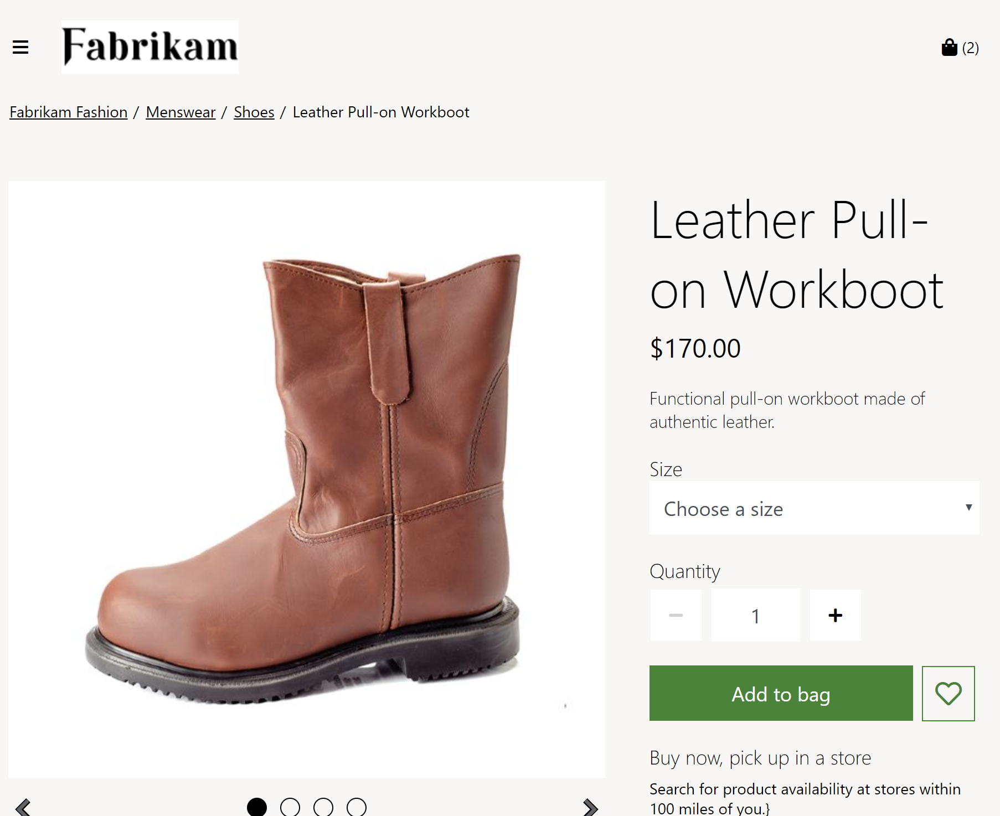

Breadcrumb-Modul
Important
Dynamics 365 Retail ist jetzt Dynamics 365 Commerce und bietet umfassende Handelsfunktionen für alle Kanäle – von E-Commerce über Shops bis hin zu Callcentern. Weitere Informationen zu diesen Änderungen finden Sie unter Microsoft Dynamics 365 Commerce.
Dieses Thema enthält Breadcrumb-Module und es wird beschrieben, wie diese Siteseiten in Microsoft Dynamics 365 Commerce hinzugefügt werden.
Übersicht
Breadcrumb-Module werden verwendet, um eine sekundäre Navigation auf Websiteseiten bereitzustellen. Sie werden normalerweise oben auf einer Seite unterhalb der Kopfzeile angezeigt. Obwohl Breadcrumb-Module zu jeder Seite hinzugefügt werden können, werden sie am häufigsten auf Produktdetailseiten (PDPs) verwendet, um die Produktkategoriehierarchie anzuzeigen und eine schnelle Möglichkeit zum Bewegen auf einer Site bereitzustellen. Ein Breadcrumb-Modul kann auch verwendet werden, um einen Link Zurück zu Ergebnissen anzuzeigen, wenn Benutzer einen PDP über eine Such- oder Listenseite öffnen. Auf diese Weise können Benutzer schnell zu ihrer gefilterten Listenseite zurückkehren, um mit dem Einkaufen fortzufahren.
Auf Seiten mit Produktkategoriekontext, wie z. B. PDPs und Kategorieseiten, zeigen Breadcrumb-Module die Kategoriehierarchie. Auf Seiten ohne Kategoriekontext werden Breadcrumb-Module standardmäßig <Site-Root> / <Aktuelle Seite> angezeigt. Breadcrumb-Module können auch manuell auf anderen Arten von Websiteseiten konfiguriert werden, um Links zu bestimmten Seiten auf der Website anzuzeigen.
Note
Das Breadcrumb-Modul ist in Dynamics 365 Commerce 10.0.12 verfügbar.
Das folgende Bild zeigt ein Beispiel eines Breadcrumb-Moduls, das die Kategoriehierarchie auf einem PDP zeigt.

Einstellungen des Breadcrumb-Moduls
Das Breadcrumb-Modul basiert auf der Breadcrumb-Anzeigetyp auf PDP Einstellung, die unter Seiteneinstellungen > Erweiterungen im Site Builder definiert wird. Diese Einstellung hat drei mögliche Werte:
- Kategoriehierarchie anzeigen – Wenn dieser Wert ausgewählt ist, zeigt das Breadcrumb-Modul die vollständige Kategoriehierarchie des Produkts an, das auf dem PDP angezeigt wird.
- Zeigen Sie zurück zu den Ergebnissen – Wenn dieser Wert ausgewählt ist, zeigt das Breadcrumb-Modul einen Link Zurück zu Ergebnissen auf einem PDP an, wenn der Benutzer den PDP über ein Modul geöffnet hat, das einen Link Zurück zu Ergebnissen ermöglicht. Diese Funktion ist verfügbar, wenn Benutzer von Seiten mit Kategorien, Such-, Listen- und Empfehlungslisten navigieren. Um diese Funktionalität zu unterstützen, verfügen die Module für Produktsammlung und Suchergebnisse über eine Eigenschaft mit dem Namen Lassen Sie die Ergebnisse auf PDP zurück. Mit dieser Eigenschaft können Sie flexibel definieren, welche Module die Linkfunktionalität Zurück zu den Ergebnissen auf dem PDP unterstützen sollen. Zum Beispiel wenn Zeigen Sie zurück zu den Ergebnissen für den Breadcrumb-Anzeigetyp auf PDP Einstellung des Breadcrumb-Moduls ausgewählt ist und Lassen Sie die Ergebnisse auf PDP zurück ausgewählt ist für das Suchergebnismodul der Suchseite, wird ein Link Zurück zu den Ergebnissen angezeigt, wenn Benutzer von der Suchseite zu einem PDP navigieren.
- Kategoriehierarchie anzeigen und zurück zu den Ergebnissen – Dieser Wert ist eine Kombination der beiden vorherigen. Wenn dieser Wert ausgewählt ist, zeigt das Breadcrumb-Modul sowohl die vollständige Kategoriehierarchie als auch einen Link Zurück zu den Ergebnissen (falls konfiguriert) auf einem PDP an.
Important
Diese Einstellungen sind in Dynamics 365 Commerce 10.0.12 verfügbar. Wenn Sie eine Aktualisierung von einer älteren Version von Dynamics 365 Commerce durchführen, müssen Sie die Datei appsettings.json manuell aktualisieren. Anweisungen zum Aktualisieren der Datei appsettings.json finden Sie unter SDK- und Modulbibliothekupdates (This is an external link).
Eigenschaften des Breadcrumb-Moduls
| Eigenschaftenname | Werte | Beschreibung |
|---|---|---|
| Stamm | Text oder Verknüpfung | Diese optionale Eigenschaft gibt den Linktext und ein Linkziel für das Breadcrumb-Site-Stammverzeichnis an. Wenn diese Eigenschaft nicht konfiguriert ist, wird kein Stamm definiert. |
| Breadcrumb-Verknüpfung | Verknüpfen | Diese optionale Eigenschaft gibt Verknüpfungen für einen manuell konfigurierten Breadcrumb an, wenn diese Verknüpfungen erforderlich sind. Links werden in der Reihenfolge angezeigt, in der sie aufgeführt sind. |
Ein Breadcrumb-Modul einer neuen Seite hinzufügen
Um ein Breadcrumb-Modul einem PDP hinzuzufügen und die erforderlichen Eigenschaften festzulegen, führen Sie die folgenden Schritte aus.
- Gehen Sie zu Website-Einstellungen > Erweiterungen und wählen dann für die Einstellung Breadcrumb-Anzeigetyp auf PDP die Option Kategoriehierarchie anzeigen aus.
- Gehen Sie zu Vorlagen und wählen Sie die PDP-Vorlage aus.
- Im Slot Container, der das Kauffeldmodul enthält, wählen Sie die Ellipsen (...) und wählen Modul hinzufügen.
- Wählen Sie im Dialogfeld Modul hinzufügen das Modul Breadcrumb und dann OK aus.
- Wählen Sie Speichern, wählen Sie Bearbeiten beenden, um die Vorlage einzuchecken, und wählen Sie dann Veröffentlichen, um es zu veröffentlichen.
- Gehe Sie zu Seiten und öffnen Sie einen PDP, der die PDP-Vorlage verwendet. Wenn noch kein PDP vorhanden ist, erstellen Sie einen.
- Im Slot Container, der das Kauffeldmodul enthält, wählen Sie die Ellipsen (...) und wählen Modul hinzufügen.
- Wählen Sie im Dialogfeld Modul hinzufügen das Modul Breadcrumb und dann OK aus.
- Im Eigenschaftenbereich des Slots Breadcrumb wählen Sie unter Root den Link Text.
- In dem Link Text Dialogfeld geben Sie Startseite ein und wählen dann unter Linkziel Fügen Sie einen Link hinzu.
- Im Dialogfeld Fügen Sie einen Link hinzu wählen Sie den Link für die Breadcrumb-Ursprung und wählen Sie OK.
- Wählen Speichern und dann Vorschau aus, um eine Vorschau der Seite anzuzeigen.
- Wählen Bearbeiten beenden, um die Vorlage einzuchecken, und wählen Sie dann Veröffentlichen, um sie zu veröffentlichen.
Zusätzliche Ressourcen
Informationen zur Modulbibliothek
Übersicht der Standard-Kategorie-Landingpage und Suchergebnisseite